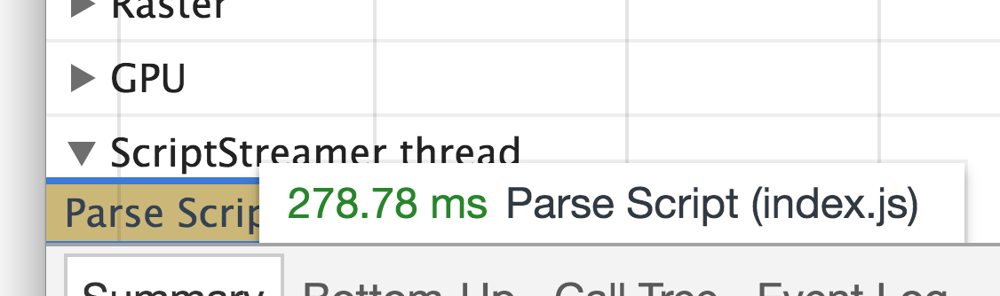
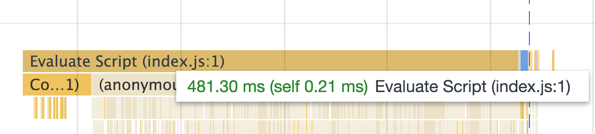
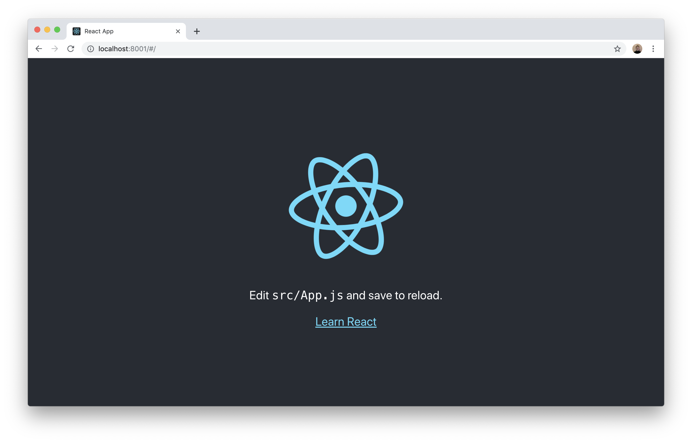

Сжимаем Javascript по-взрослому
Алексей Золотых


Сжимаем Javascript по-взрослому
– Зачем?
– Быстродействие!
Экономия
Экономия
- Время на сеть
- Процессор
- Память
5mb
<!DOCTYPE html>
<html lang="en">
<head> </head>
<body>
<script src="./index.js"></script> <!--5 megabytes-->
</body>
</html>
Network — 100ms

Parse — 300ms
Evaluate — 500ms

class Point {
constructor() {
...
this.x = x;
...
}
static distance(a, b) {}
}
Babel
function _instanceof(left, right){...}
function _classCallCheck(instance, Constructor) {...}
function _defineProperties(target, props) {...}
function _createClass(Constructor, protoProps, staticProps) {...}
Как?
- Потоковое сжатие
- Сжатие на основе AST
Потоковое сжатие
на уровне сервера
npx create-react-app my-app
| Размер | 120k |
|---|---|
| Время всего запроса | 4 сек |
| Ожидание | 2 сек |
|---|---|
| Загрузка | 2 сек |
Сжатие в потоке
- gzip1— 50–90% 🥩
- gzip9 — 15–45% от gzip1
- zopfli — 4–7% от gzip9
- brotli11 — 8–65% от zopfli
| Размер | Время | |
|---|---|---|
| Было | 120 | 4 |
| Стало | 40 | 2,7 |
30% быстрее загрузка страницы *
* для медленных сетей и быстрых устройств

...
gzip on;
gzip_static on;
gzip_vary on;
gzip_types ...
brotli on;
brotli_comp_level 4;
brotli_static on;
brotli_types ...
...
Опыт LinkedIn
Gist с описанием
Итого:
- Просто
- Для сети
- Не работает для маленьких файлов
- Почти всегда стоит включить
«Для js файлов на фоне космического коэффициента сжатия brotli считаю ненужным минификацию»
<!DOCTYPE html>
<html lang="en">
<head>
<script src="https://CDN/lodash.js"></script>
</head>
<body>
</body>
</html>
lodash.js
| По сети | В браузере |
|---|---|
| 87k | 527k |
Можем сжать?
используется в lodash
uglifyjs lodash.js > lodash.min.js
| По сети | В браузере |
|---|---|
| 35k | 144k |
- Убрали пробелы
- Убрали комменты
(function() {
const a = 1;
const b = 2;
console.log(a + b);
}());
console.log(3);
if(1 * 5){
console.log(1)
}
console.log(1);
uglifyjs lodash.js --mangle > lodash.min.js
function lognLongLongName(mySuperArgs){
return mySuperArgs[0];
}
function n(i){
return i[0];
}
* кроме функций верхнего уровня
| По сети | В браузере |
|---|---|
| 23k | 72k |
import * as _ from 'lodash'
if (_.has([1, 2, 3], 2)) {
console.log("debug");
}
от 23к до 576к
import * as _ from 'lodash/has'
if (_.has([1, 2, 3], 2)) {
console.log("debug");
}
от 3к до 10к
Import Cost
| JetBrains | bit.do/jcost |
|---|---|
| VSCode | bit.do/vcost |
Как это скомпилит UglifyJS?
import * as _ from 'lodash/has'
if (_.has([1, 2, 3], 2)) {
console.log("debug");
}
import * as _ from 'lodash/has'
^
ERROR: Unexpected token: name
?? expected: punc ?? Terser
github.com/terser-js/tersermodule.js
export function square(x) {
return x * x;
}
export function cube(x) {
return x * x * x;
}
index.js
import {cube} from './module'
console.log(cube(x))
Мечта
function cube(x) {
return x * x * x;
}
console.log(cube(x))
Реальность
!function(e){var r={};function t(n){if(r[n])return r[n].exports;var o=r[n]={i:n,l:!1,exports:{}};return e[n].call(o.exports,o,o.exports,t),o.l=!0,o.exports}t.m=e,t.c=r,t.d=function(e,r,n){t.o(e,r)||Object.defineProperty(e,r,{configurable:!1,enumerable:!0,get:n})},t.r=function(e){Object.defineProperty(e,"__esModule",{value:!0})},t.n=function(e){var r=e&&e.__esModule?function(){return e.default}:function(){return e};return t.d(r,"a",r),r},t.o=function(e,r){return Object.prototype.hasOwnProperty.call(e,r)},t.p="",t(t.s=0)}([function(e,r,t){"use strict";t.r(r);var n;console.log((n=3)*n*n)}]);
module.js
export function square(x) {
return x * x;
}
export function cube(x) {
return x * x * x;
}
module.js
export function square(x) {
return x * x;
}
export function cube(x) {
return square(x) * x
}
Статья на Хабре
bit.do/treesh
...
/* unused harmony export square */
/* harmony export (immutable) */ __webpack_exports__["a"] = cube;
function square(x) {
return x * x;
}
function cube(x) {
return x * x * x;
}
...
...
/* unused harmony export square */
/* harmony export (immutable) */ __webpack_exports__["a"] = cube;
function square(x) {
return x * x;
}
function cube(x) {
return x * x * x;
}
...
module.js
export class MyClass {
print(){
console.log('find me');
}
}
/* unused harmony export MyClass */
var MyClass = function () {
function MyClass() {
babelHelpers.classCallCheck(this, MyClass);
}
MyClass.prototype.turn = function print() {
console.log('find me');
};
return MyClass;
}();
/* unused harmony export MyClass */
var MyClass = function () {
function MyClass() {
babelHelpers.classCallCheck(this, MyClass);
}
MyClass.prototype.turn = function print() {
console.log('find me');
};
return MyClass;
}();
UglifyJS не понимает, что выкидывать
...
/* unused harmony export MyClass */
var MyClass = /*#__PURE__*/ function () {
...
Как починить
- Babel 7
- Webpack
Код на Dart
void main() {
print(cube(3));
}
int cube(int x) => x * x * x;
int square(int x) => x * x;
Вывод
...
main: function() {
H.printString("27");
}
...
class Car {
Rudder rudder;
List<Wheel> wheelList;
}
class Rudder {
void turn(){ print('turn'); }
}
class Wheel {
void pump(){ print('pump'); }
}
void main(){
final car = new Car();
car.wheelList = [
new Wheel() new Wheel(),
new Wheel(), new Wheel(),
];
car.rudder = new Rudder();
car.rudder.turn();
}
...
main: function() {
H.printString("turn");
}
...
— Потому что он использует AST

Книга по SSA
bit.do/ssabook— Я не хочу писать на Dart!
— Есть же Closure Compiler!
const car = {
wheelList: [
new Wheel(), new Wheel(),
new Wheel(), new Wheel(),
],
rudder: new Rudder(),
};
car.rudder.turn();
console.log("turn");Оптимизации
normalize optimizeArgumentsArray aggressiveInlineAliases collapseProperties earlyInlineVariables earlyPeepholeOptimizations removeUnusedCode disambiguateProperties codeRemovingLoop devirtualizePrototypeMethods flowSensitiveInlineVariables mainOptimizationLoop flowSensitiveInlineVariables removeUnusedCode collapseAnonymousFunctions extractPrototypeMemberDeclarations ambiguateProperties renameProperties convertToDottedProperties coalesceVariableNames peepholeOptimizations exploitAssign collapseVariableDeclarations denormalize renameVars renameLabels latePeepholeOptimizations
java -jar compiler.jar \
--compilation_level ADVANCED \
--language_in=ES6 \
--js lodash.js > out.js
527k ⟹ 140k 💩
/**
* This annotation spans multiple lines for readability
* @type {{
* id:number,
* val:string,
* }}
*/
var foo;
Tsickle
TypeScript ⟹ Closure TranslatorЕсли все скомпилировалось в это, то
console.log("turn");Как будет работать здесь?
<script>
var rudder = new Rudder();
</script>
const car = {};
car.idNumber = '1234';
function displayId(car) {
alert(car['idNumber']);
}
alert(car.idNumber);
displayId(car);
var a={};
a.a="1234";
alert(a.a);
alert(a.idNumber);
(function () {
function fibonacci(x) {
return x <= 1 ? x : fibonacci(x - 1) + fibonacci(x - 2);
}
global.x = fibonacci(15);
})();
x = 610;
Lodash?
💩 527k ⇒ 868k 💩
Выводы
- Потоковое сжатие
- Можно оставить как есть
- GCC не для библиотек
- Искать другие варианты
Алексей Золотых
twitter: @zolotyh
Спасибо за внимание!